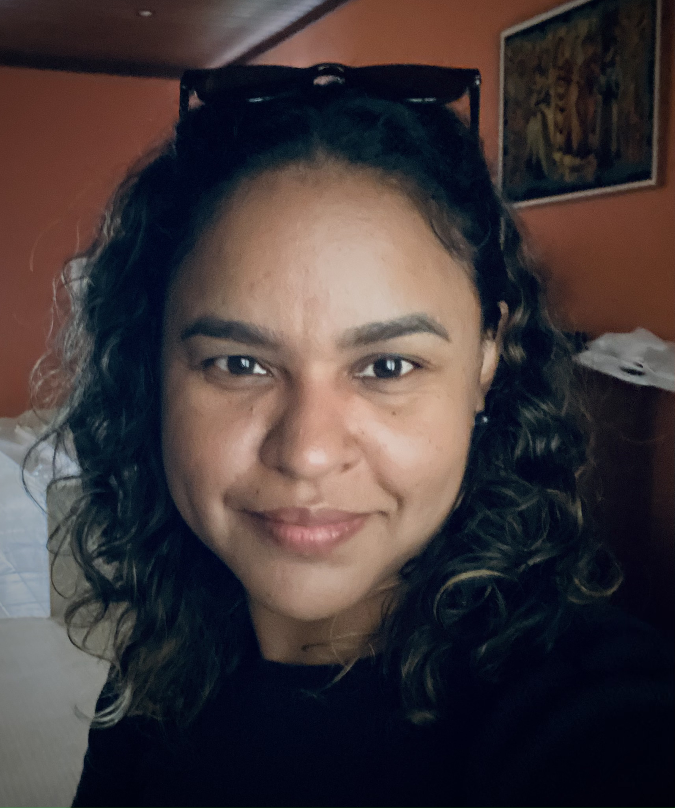
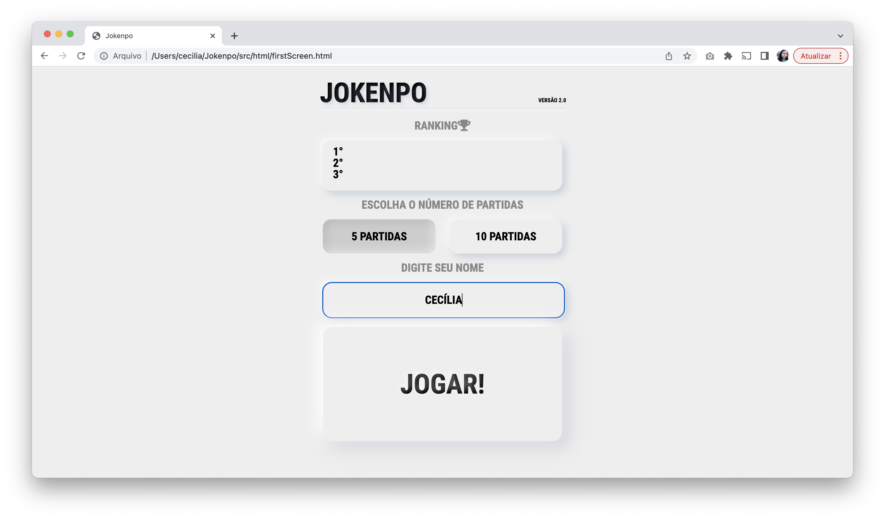
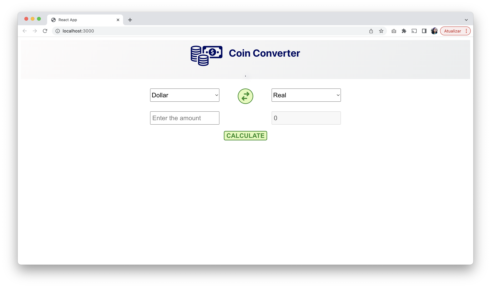
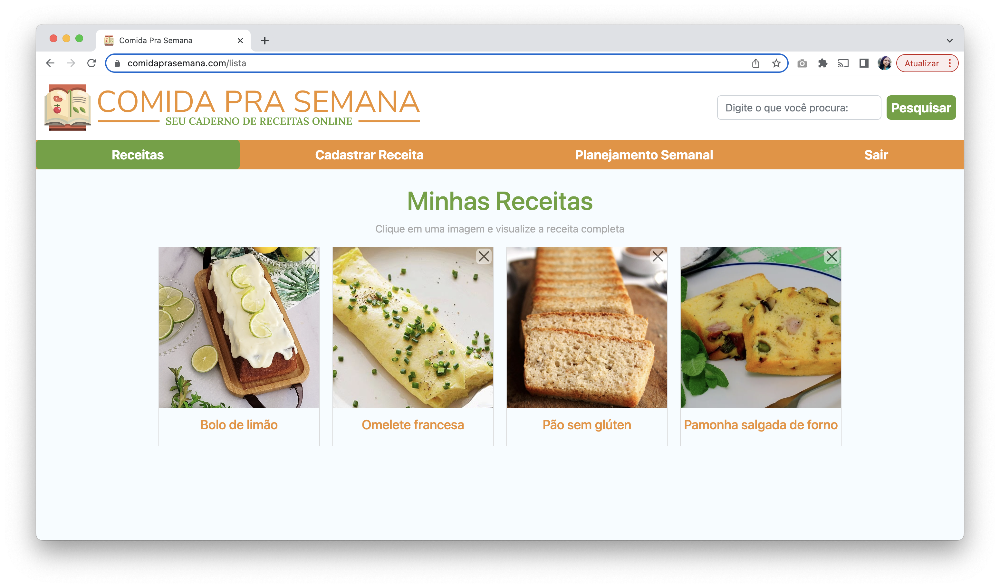

Quem sou eu?
Olá! Meu nome é Cecília, e geralmente as pessoas me chamam pelo meu nome mesmo. Tenho 39 anos, sou mulher cisgênero, negra, casada e tenho dois gatinhos. Resolvi criar esta página para compartilhar um pouco da minha trajetória até aqui :)
Um resumo da minha trajetória
Foi no curso técnico de Administração que eu conheci diversas áreas, dentre elas a Informática. Como sempre gostei de matemática, e pensando também no mercado de trabalho, acabei optando por prestar vestibular para Informática e, posteriormente, pensava em cursar Psicologia para conhecimento próprio.
Foi somente no ano de 2004 que eu ingressei na graduação de Informática. Na minha turma, de pouco mais de 40 alunos, apenas 6 eram mulheres. No início dos anos 2000 o cenário em TI era bem diferente do atual...
Permaneci no curso por 5 semestres e, durante esse tempo, prestei um novo vestibular e ingressei em Psicologia, na mesma universidade.
Fui muito feliz na Psicologia. Fiz grandes amizades, presentes na minha vida até hoje, conheci a terapia e tive experiências profissionais que contribuíram para ampliar a minha percepção do mundo e do outro.
Meu último trabalho como psicóloga envolvia, dentre outras coisas, ajudar a identificar e desenvolver potencialidades de adolescentes do gênero feminino, que estavam em cumprimento de medida socioeducativa. Inevitavelmente, algumas vezes me identificava com essas meninas e, de certo modo, a troca que tinha com elas me incentivou a ir atrás dos meus sonhos e mudar de área.
A transição de carreira tem sido extremamente desafiadora, mas, hoje em dia, me sinto muito privilegiada por todo o suporte que recebo do meu companheiro, presente na minha vida há quase 20 anos, e do exemplo de tantas mulheres que derrubaram barreiras para poderem ocupar os seus devidos espaços e, assim, abrir caminho para tantas outras mulheres entrarem para a área de TI.
Experiências, Projetos e Interesses
Desde quando iniciei a minha transição de carreira, em 2020, experimentei algumas áreas dentro de TI. Meu primeiro passo foi me matricular no curso Tecnólogo em Banco de Dados e em um bootcamp em Análise de Dados, enquanto fazia alguns cursos relacionados a essa área. Por vir de humanas, acreditava que análise de dados seria ideal pra mim, porque era uma área em crescimento e que estava recebendo profissionais dos mais diferentes backgrounds.
Tive uma breve passagem por um estágio em Análise de Dados, mas logo migrei para Desenvolvimento Web Back-End, por questões de melhores oportunidades na empresa que eu estava na época. Foi desafiadora a mudança de linguagem (de Python para JavasScript) e começar já me deparando com grandes projetos. Entendi que eu precisava dar alguns passos para traz e recalcular a rota.
Após a saída desse estágio, tenho focado no Front-End, onde sinto que me encontrei e tenho muito interesse em continuar me desenvolvendo. Tenho dedicado meu tempo de estudo em aprender JavaScript, HTML, CSS, SASS e React.
Como forma de aprendizado, procuro ler documentações oficiais, assisto vídeos no YouTube, faço cursos e pratico através de desafios e projetos pessoais.
Pelo estágio que realizei, desenvolvi um Jokenpô (joguinho da pedra, papel e tesoura) onde tive a oportunidade de fazer um programa utilizando o layout feito por um designer, conheci o figma e até aprendi a utilizar essa ferramenta para desenvolver o meu próprio layout. Para esse projeto, foram utilizadas as seguintes linguagens e ferramentas: HTML, CSS, JavaScript, Local Storage, Ruby on Rails, SQLite e figma.
Um outro projeto, feito por conta própria, foi um conversor de moedas. Para ele, utilizei: HTML, CSS, JavaScript, React e Bootstrap.
O último exemplo de projeto que irei compartilhar aqui ainda está em construção: o Comida pra Semana. A ideia deste site é ser um caderno de receitas virtual e ainda ser um auxiliar na organização das refeições da semana, possibilitando criar cardápios com as receitas já salvas.
Esse projeto foi idealizado por mim, mas devido à sua complexidade, estou tendo ajuda do meu marido, que é programador, e tem sido uma uma forma de colocar em prática os conhecimentos que já tenho e de adquirir novos.
Metas para o futuro
Quero continuar estudando, evoluir cada vez mais como desenvolvedora front-end e conseguir uma oportunidade de trabalho. Porém, fora o conhecimento, acredito que é preciso acreditar no próprio potencial, aprender a lidar com o alto padrão de exigência, compreender que erros fazem parte do processo de aprendizado e pedir ajuda quando necessário.
Fazer parte de uma comunidade de mulheres em TI é fundamental para não se sentir sozinha e buscar incentivo para não desistir.
Obrigada por acessar a minha página! :D
Deseja entrar em contato comigo para trocar uma ideia ou me contratar? Pode mandar uma mensagem através dos seguintes canais:
- Email: ceciliamblourenco@gmail.com
- LinkedIn: www.linkedin.com/in/cecilia-lourenco
- GitHub: github.com/cecilialourenco
- Discord: Cecília Lourenço#7686